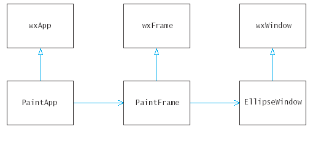

previous |
start |
next
Painting
- The OnPaint function does not draw on
the application frame, but on a separate window of type
EllipseWindow, derived from wxWindow.
- We believe that an "ellipse window" is a user
interface element, just like a text control or button, and deserves
it's own class.
- We will see another example later.

previous |
start |
next